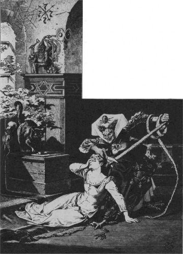

むかし、あるところに、
夫婦が住んでおりました。ふたりは、長い年月のあいだ、子どもをひとりほしいと思っていましたが、どうしてもさずかりませんでした。けれども、ようやく
神さまがその
願いをかなえてくださりそうなようすが、おかみさんにみえてきました。
この
夫婦のうちのうしろがわには、小さな
窓がありました。その窓からは、
世にも美しい花や
野菜のいっぱいうわっている、きれいな
庭が見えました。けれども、その庭は高いへいにとりかこまれていました。しかも、その庭は、たいへんな
勢力をもっていて、
世間の人たちからおそれられている、ある
魔法使いのばあさんのものでしたから、だれひとりそのなかへはいっていこうとするものはありませんでした。
ある日のこと、おかみさんがこの
窓ぎわに立って、庭を見おろしていますと、それはそれはきれいなラプンツェル（チシャ）のうえてある野菜畑が目につきました。みるからに、みずみずしく、青あおとしたラプンツェルです。おかみさんはそれがほしくてたまらなくなって、なんとかして食べたいものだと思いました。
しかもその思いは、日ましにはげしくなるばかりでした。けれども、それがとても手にいれられないことはわかりきっていましたので、おかみさんはすっかりやせほそって、顔色もあおざめ、見るかげもないようになってきました。
これを見て、
亭主はびっくりして、たずねました。
「おまえ、どうしたんだい。」
「ああ、ああ、うちのうらの
庭のラプンツェルが食べられなかったら、あたしゃ
死んでしまうよ。」
と、おかみさんはこたえました。
亭主は、おかみさんがかわいくてなりませんので、
「
女房を死なせるくらいなら、あのラプンツェルをとってきてやれ。どうなったって、かまうものか。」
と、思いました。
そこで
亭主は、夕やみにまぎれて、へいをのりこえました。
魔法使いの庭にはいるがはやいか、おおいそぎでラプンツェルをひとつかみとって、おかみさんのところへもってきてやりました。
おかみさんは、それでさっそくサラダをこしらえて、がつがつ食べました。ところが、そのおいしいことといったら、またとありません。そのためおかみさんは、そのつぎの日になりますと、こんどは、まえの日の三ばいもそれがほしくてたまらなくなってしまいました。
おかみさんをおちつかせるためには、
亭主はもういっぺんとなりの庭におりていかなければなりませんでした。そこで、またもや夕やみをねらってでかけていきました。ところが、へいをのりこえたとたん、
亭主はびっくりぎょうてんしてしまいました。むりもありません。すぐ目のまえに、
魔法使いのばあさんが立っていたのですからね。
「おまえはなんてずうずうしい男なんだい。」
と、魔法使いは亭主をぐいとにらみつけて、いいました。
「わしの庭へはいりこんで、どろぼうみたいに、わしのラプンツェルをぬすんでいくとは。さあ、ひどいめにあわせてくれるぞ。」
「ああ、どうかおゆるしくださいまし。」
と、
亭主はこたえていいました。
「どうにもいたしかたなく、こんなことをしでかしたんでございます。じつは、
女房めが、
窓からこちらさまのラプンツェルを見ましたんで。すると、どうしてもこれがほしくなって、ひと口でも食べないことには、
死んじまうなどともうすものでございますから。」
これをきくと、
魔法使いはいかりをやわらげて、
亭主にいいました。
「ほんとうにおまえのいうとおりなら、ほしいだけラプンツェルをとらせてやろう。そのかわり、ひとつだけ
条件がある。おかみさんが子どもを生んだら、その子をわしにくれなければいけない。その子はしあわせにしてやろう。わしが母親のようにめんどうをみてやるよ。」
亭主はこわくてたまらないものですから、なにもかも
承知してしまいました。
やがて、おかみさんがお
産をしますと、
魔法使いのばあさんはさっそくやってきて、その子にラプンツェルという名まえをつけて、いっしょにつれていってしまいました。
ラプンツェルは、お日さまのてらすこの
世のなかで、だれよりも美しい子どもになりました。ラプンツェルが十二のとき、
魔法使いのばあさんは、この子を森のなかの
塔にとじこめてしまいました。その塔には、
階段もなければ、入り口もありません。ただ、ずっと高いところに
小窓がひとつあるきりでした。
魔法使いのばあさんが塔のなかにはいろうと思うときには、塔の下に立って、こうよぶのでした。
ラプンツェル ラプンツェル
おまえの髪をたらしておくれ
ラプンツェルは、長い美しい髪の毛をしていました。まるで、
黄金をつむいだようにきれいでした。
魔法使いの声をききますと、ラプンツェルはあんだ髪をほどいて、窓のかぎにまきつけます。すると、
髪の
毛はするすると二十エレ
（約十二メートル）ほどもたれさがりました。魔法使いのばあさんはそれにつかまって、よじのぼっていくのでした。
それから、二、三年たったときのことでした。あるとき、
王子が馬にのってこの森のなかにはいってきて、この
塔のそばをとおりかかりました。すると、それはそれは美しい歌声がきこえてきました。王子は思わず馬をとめて、じっとききほれました。それは、さびしさのあまり、こうして、美しい声をひびかせては、時をすごしているラプンツェルの歌声だったのです。
王子は上へのぼっていこうと思って、
塔の入り口をさがしてみました。けれども、どうしても見つかりません。それで、しかたなくお
城へかえりましたが、その歌にたいそう心をうごかされましたので、それからというものは、まい日森へでかけていっては、その歌に耳をかたむけるのでした。
あるとき、王子が木のかげにいますと、
魔法使いのばあさんがやってくるのが見えました。そして、その女が上にむかって、
ラプンツェル ラプンツェル
おまえの髪をたらしておくれ
と、よびかけるのがきこえました。
それをきいたラプンツェルが、あんだ
髪の
毛をたらしますと、
魔法使いはそれにつかまってのぼっていきました。
（あれをはしごがわりにしてのぼっていけるのなら、ぼくもひとつ
運だめしをしてみよう。）
そこで、そのつぎの日、くらくなりかけたころ、
王子は
塔のところへいって、よびかけました。
ラプンツェル ラプンツェル
おまえの髪をたらしておくれ
すると、たちまち、髪の毛がたれさがってきましたので、王子はそれにつかまってのぼっていきました。
ラプンツェルは、さいしょ、いままでに見たこともない男の人がはいってきましたので、ひどくびっくりしました。でも
王子が、たいそうやさしく話しかけて、
「ぼくは、あなたの歌にすっかり心をうごかされて、そのため心のおちつきもなくなってしまったのです。どうしても、あなたにあわずにはいられなかったのです。」
と、話しますと、ラプンツェルのこわい気持ちも、ようやくきえうせました。それから、王子は、
「ぼくの
妻になってはくれませんか。」
と、たずねました。
ラプンツェルは、王子がわかくて美しいのを見て、
（このかたなら、きっと、ゴーテルおばあさんよりもあたしをかわいがってくださるわ。）
と、思いましたので、すぐに、はい、とこたえて、じぶんの手を王子の手の上にかさねました。そして、ラプンツェルはいいました。
「あたし、ごいっしょにいきたいんですけど、でもどうやっておりていったらいいのかわかりませんわ。これから、ここへいらっしゃるたびに、
絹ひもを一本ずつもってきてください。それで、はしごをあみますわ。そして、はしごができたら、おりていきますから、あたしを馬にのせて、つれていってくださいな。」
そして、そのときまで、王子がまい
晩ラプンツェルのところへくることにしました。なぜって、昼まは、ばあさんがきますもの。
魔法使いのばあさんは、そんなことになっていようとはちっとも気がつきませんでした。ところがあるとき、ラプンツェルがなにげなしに、こんなことをいってしまったのです。
「ねえ、ゴーテルおばあさん、どうしてなんでしょうねえ。わかい
王子さまよりも、おばあさんのほうが、ひきあげるのに、ずっとおもいわ。王子さまは、あっというまにあがってきてしまうんですけどねえ。」
「ええ、このばちあたりめ。」
と、
魔法使いはどなりました。
「なんてことをいうんだい。あたしゃ、おまえを
世間からひきはなしておいたつもりだったのに、よくもひとをだましたね。」

おばあさんは、
腹だちまぎれに、ラプンツェルの美しい
髪の
毛をひっつかむと、それを
二巻き
三巻き左の手にまきつけました。そして、右手にはさみをとって、ジョキ、ジョキと髪の毛を切ってしまいました。ですから、美しい髪の毛はあまれたまま、
床の上におちました。
そればかりか、ばあさんはなさけようしゃもなく、かわいそうなラプンツェルを
荒れ
野原へ
追いやってしまいました。ラプンツェルはここで、それはそれはつらい、みじめな日をおくらなければなりませんでした。
いっぽう、
魔法使いのばあさんは、ラプンツェルを追いだしてしまったその日の夕がた、切りとった
髪の
毛を
窓のかぎにむすびつけておきました。そして、王子がやってきて、
ラプンツェル ラプンツェル
おまえの髪をたらしておくれ
と、よびかけたとき、その髪の毛をおろしてやりました。
王子がのぼってみますと、どうでしょう。かわいいラプンツェルのすがたは見えず、
魔法使いのばあさんが、にくにくしげな、ものすごい目つきで、じぶんをにらみつけているではありませんか。
「はっはっは。」
と、ばあさんはばかにしたようにわらいました。
「かわいいおくさんをつれにおいでかい。だがね、きれいな
小鳥は、もう
巣にいやしないよ。歌もうたやしないさ。ネコにさらわれちまったんだよ。おまえも、ネコに目玉をひっかかれるぞ。ラプンツェルはもうおまえのものじゃなくなったんだ。もう二度とあれの顔を見ることはできなかろうよ。」
王子はかなしみのあまり、われをわすれて、もうどうにでもなれと、
塔からとびおりました。
命はたすかりましたが、おちたところにはえていたイバラのとげに目をつかれて、王子の目はつぶれてしまいました。
目の見えなくなった王子は、森のなかをさまよい歩きました。食べるものといえば、木の
根や草の
実があるばかりでした。王子は、かわいい、かわいい
妻をうしなってしまったことを、ただただなげきかなしんでいました。
こうして、王子がみじめな思いをして、二年、三年とさまよいまわったあげく、とうとう、あの
荒れ
野のなかへまよいこみました。こここそ、あのラプンツェルが、じぶんの生んだふた子の男の子と女の子といっしょに、あわれなまい日をおくっている野原だったのです。
王子は人声をききつけて、その声になんだかききおぼえがあるように思いましたので、声のするほうへと歩いていきました。こうして、王子が近づいていきますと、ラプンツェルのほうで王子に気がつきました。ラプンツェルは王子の
首にだきついて、
泣きました。
ラプンツェルの
涙がふたしずく、王子の目をぬらしますと、ふしぎにも、王子の目はもとのようにはっきりしてきて、またむかしどおり、ものが見えるようになりました。
王子はラプンツェルと子どもたちをつれて、国へかえりました。国では、人びとが大よろこびでむかえてくれました。それから、みんなは長いあいだたのしく、
幸福にくらしました。